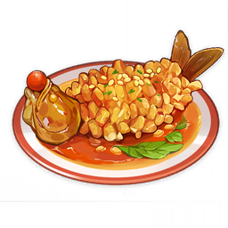
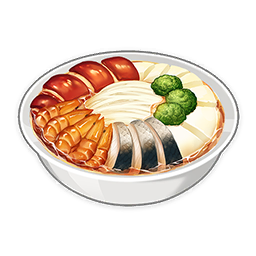
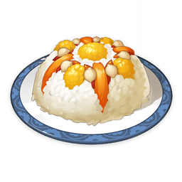

Tevyat Fried Egg
Tevyat Fried Egg- Fisherman's Toast
 Chicken-Mushroom Skewer
Chicken-Mushroom Skewer Flour
Flour Sugar
Sugar- Sausage
- Ham
- Crab
- Bamboo Shoot
- Lotus Head
- Matsutake
- mushroom
- Carrot
- Radish
- Jueyun Chili
 Rice Buns
Rice Buns Grilled Tiger Fish
Grilled Tiger Fish Jueyun Chili Chicken
Jueyun Chili Chicken Mint Salad
Mint Salad- Crystal Shrimp
 Black-Back Perch Stew
Black-Back Perch Stew-  Squirrel Fish
-  Come and Get It
 Triple-Layered Consommé
Triple-Layered Consommé-  Universal Peace
 Minty Meat Rolls
Minty Meat Rolls- Crab Roe Tofu